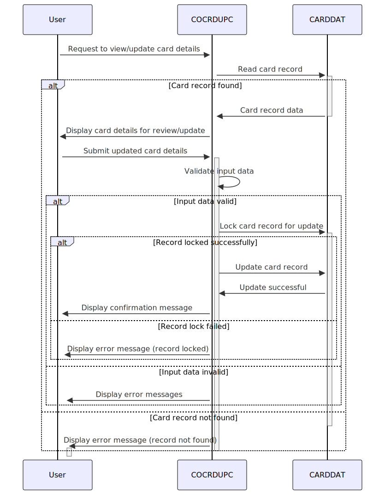

Gerado em: 1º de outubro de 2024
Título do Documento: Especificação do Programa de Atualização de Detalhes de Cartão de Crédito
Descrição Resumida:
Este programa fornece uma interface segura para pessoal autorizado visualizar e atualizar detalhes de cartão de crédito armazenados em um sistema financeiro maior. Ele prioriza a integridade dos dados por meio de mecanismos de validação de entrada e controle de concorrência.
Histórias do Usuário:
Como analista de crédito, preciso visualizar e atualizar os detalhes do cartão de crédito com segurança para garantir que as informações que mantemos sejam precisas e atuais.
Épico Relacionado: 3 - Gestão de Cartão de Crédito
Requisitos Técnicos:
- Tratamento de Solicitações:
- O programa recebe solicitações para visualizar ou atualizar detalhes do cartão de crédito.
- As solicitações originam-se de terminais de usuário ou sistemas autorizados.
- Recuperação de Dados:
- Lê registros de cartão de crédito de um banco de dados com base no
account number e card number.
- Utiliza o arquivo VSAM
CARDDAT para armazenamento de dados.
- Emprega comandos CICS para interação com arquivos.
- Validação de Entrada:
- Account Number: Numérico, 11 dígitos.
- Card Number: Numérico, 16 dígitos.
- Cardholder Name: Caracteres alfabéticos e espaços apenas.
- Card Status: ‘Y’ (ativo) ou ‘N’ (inativo).
- Expiry Date: Data válida no futuro (MM/AA).
- Processamento de Atualização:
- Atualiza registros de cartão de crédito existentes no banco de dados.
- Implementa bloqueio de registro durante atualizações para evitar problemas de concorrência.
- Utiliza comandos CICS para bloqueio e atualização de registros.
- Confirmação e Feedback:
- Fornece mensagens de feedback ao usuário indicando o sucesso ou falha da operação.
- As mensagens de erro fornecem detalhes específicos sobre falhas de validação ou erros de banco de dados.
- Segurança:
- Autenticação: verifica as credenciais do usuário e a autorização antes de conceder acesso a dados confidenciais.
- Utiliza recursos de segurança CICS para autenticação e autorização do usuário.
- Criptografia de Dados: criptografa dados confidenciais em trânsito e em repouso para evitar acesso não autorizado.
- Aproveita os mecanismos de criptografia em nível de sistema ou software de criptografia especializado.
- Trilha de Auditoria:
- Registra todas as ações de atualização para fins de auditoria e rastreamento.
- Registra ID do usuário, registro de data e hora, campos de dados modificados e valores antigos/novos.
- Emprega um mecanismo de registro separado ou integra-se a um sistema centralizado de registro de auditoria.
- Tratamento de Erros:
- Implementa tratamento de erros robusto para lidar normalmente com condições inesperadas.
- Registra erros com níveis de severidade apropriados e mensagens descritivas.
- Exibe mensagens de erro amigáveis ao usuário, fornecendo orientação para resolução.
- Desempenho:
- Otimiza a recuperação de dados, validação e processos de atualização para tratamento eficiente de altos volumes de transações.
- Utiliza técnicas de indexação apropriadas e parâmetros de ajuste de banco de dados para melhorar o desempenho.
- Manutenibilidade:
- Adere aos padrões de codificação COBOL e melhores práticas para legibilidade e manutenção.
- Implementa princípios de design modular para facilitar as atualizações e melhorias de código.
- Dependências:
- CICS (Customer Information Control System)
- VSAM (Virtual Storage Access Method)
- COBOL Compiler and Runtime Environment
- Mecanismos de segurança em nível de sistema ou software de criptografia
- Sistema centralizado de registro de auditoria (opcional)
Modelos Relacionados:
CARD-RECORD:
CARD-ACCT-ID: Numeric(11), Account number.CARD-CARD-NUM: Numeric(16), Credit card number.CARD-CVV-CD: Numeric(3), Card Verification Value (CVV).CARD-NAME-EMBOSSED: Alphanumeric(50), Cardholder’s name.CARD-EXPIRAION-DATE: Alphanumeric(10), Expiration date (MM/YY).CARD-ACTIVE-STATUS: Alphanumeric(1), Card status (‘Y’ or ‘N’).
Configurações:
LIT-CARDFILENAME: Nome do arquivo para o arquivo de dados do cartão de crédito (CARDDAT).- Mensagens de erro e códigos de resposta:
DID-NOT-FIND-ACCTCARD-COMBO: “Cartões não encontrados para esta condição de pesquisa.”COULD-NOT-LOCK-FOR-UPDATE: “Não foi possível bloquear o registro para atualização.”DATA-WAS-CHANGED-BEFORE-UPDATE: “Registro alterado por outra pessoa. Por favor, revise.”LOCKED-BUT-UPDATE-FAILED: “Falha na atualização do registro.”
Melhorias de Código:
- Implementar uma rotina centralizada de tratamento de erros para registro consistente e feedback ao usuário.
- Adicionar comentários para esclarecer a lógica de negócios complexa e melhorar a legibilidade do código.
- Usar nomes de dados significativos para aumentar a compreensão e manutenção do código.
- Considere o uso de um formatador de código para aplicar um estilo de codificação consistente e melhorar a legibilidade do código.
Melhorias de Segurança:
- Implementar sanitização de entrada para evitar ataques de injeção.
- Mascarar informações confidenciais como números de cartão de crédito e códigos CVV ao exibi-los aos usuários.
- Impor políticas de senha forte para contas de usuário com acesso ao sistema.
- Revisar e atualizar regularmente as medidas de segurança para lidar com novas vulnerabilidades e ameaças.
Diagrama Conceitual:

–Made by “Smart Engineering” (by Compass.UOL)–